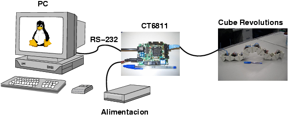
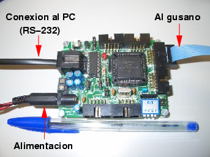

|
CUBE REVOLUTIONS: ELECTRÓNICA |
Cube Revolutions no es un robot autónomo. Está controlado desde un PC. El robot se maneja como si fuese un periférico del PC, conectado por el puerto serie. Tanto la electrónica como la alimentación están situados fuera de la estructura mecánica.
Un microcontrolador se encarga de recibir las posiciones de las articulaciones desde PC, por el puerto serie y generar las señales PWM para posicionar los servos. Se puede utilizar la Tarjeta Skypic o la CT6811. Cuando se construyó Cube Revolutions, la Skypic todavía no se había desarrollado por lo que la documentación está hecha usando la CT6811.
|
 |
Tanto la Tarjeta CT6811 como la Skypic son Hardware libre, por lo que están disponibles sus esquemas y se conceden permisos para su copia, modificación y distribución.
|
 |
Se ha utilizado un micro 68HC11E2, que lleva grabado el servidor de control de servos servos8.